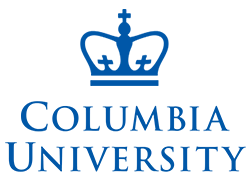

Lydia Chilton is an Assistant Professor in the Computer Science Department at Columbia University. She is an early pioneer in crowdsourcing complex tasks on Mechanical Turk. Currently she leads the Computational Design Lab, whose goal is to build AI tools that enhance people's productivity. The three main approaches are to:
- discover principles of successful solutions
- design better solutions through brainstorming, synthesis, and iteration
- communicate complex ideas more easily with visual symbols and well-grounded prose

Computer Science Department
chilton@cs.columbia.edu
Google Scholar Page
Office CEPSR 612
CV